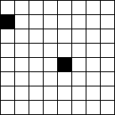
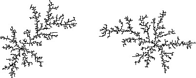

| In its simplest form, DLA occurs on a roughly circular grid of square cells. |
| The cell at the center of the circle is the location of the
seed point, a particle stuck at that square. |
| Now pick a square on the perimeter of the grid and place a wandering
particle on that square. |
| With each tick of the clock, this particle moves to one
of the four adjacent squares, left, right, above, or below. |
| If the moving particle
wanders too far from the seed, it falls off the edge of the grid and another wandering
particle is started at a randomly chosen edge point. |
| When a wandering particle arrives
at one of the four squares adjacent to the seed, it sticks there forming a cluster of
two particles, and another moving particle is released. |
| When a moving particle
arrives at one of the squares adjacent to the cluster,
it sticks there. |
|  |
| Click the picture to return. |
|
| Continuing in this way, with patience we can build up a large aggregate. |
| This process is called diffusion-limited aggregation because the growth of the cluster
is governed by the particles' diffusing across the grid. |
| Here are two small DLA clusters. |
|  |